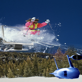
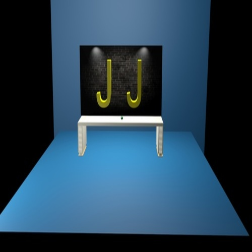

FATEC 2º semestre de Sistemas para Internet
Matérias do semestre
Estrutura de Dados - profº Cristiano Pires Martins
Inglês - profº Carlos Alberto Gonçalves Da Silva
Ligislação Aplicada à Internet - profº Guilherme Soncini Da Costa
Matemática Discreta - profº Rosângela Peregrina Sanches
Padrões de Projeto de Sítios Internet II - profº Heitor Augusto Murari Cardozo
Prática de Design - profº Fabiana Pupin Masson Caravieri
Redes e Internet - profº Wesley Soares De Souza
Quem sou eu ...
Sou o João Henrique, tenho 18 anos e estou cursando o 2º semestre de Sistemas para Internet, na instituição, Fatec Jales. Sempre gostei da área de TI, e esse é um curso que me identifico, onde tenho vontade de aprender sempre mais. Nos momentos livres gosto de sair, games, assitir futebol, ficar nas redes sociais.
Localização
Galeria

